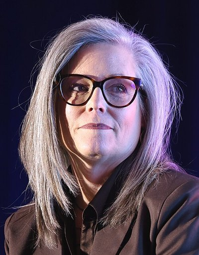
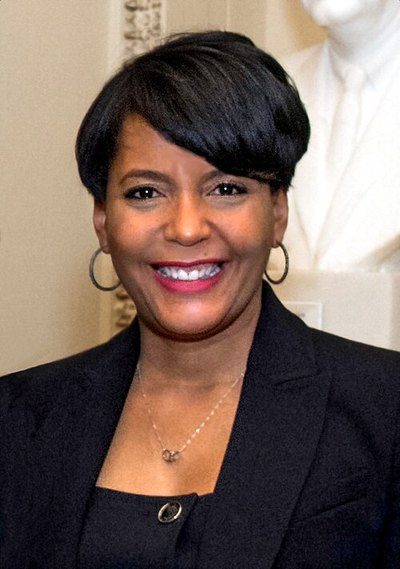
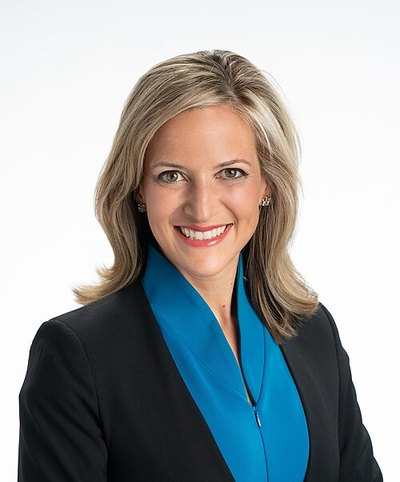
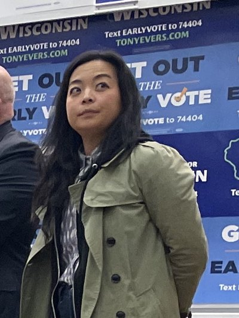
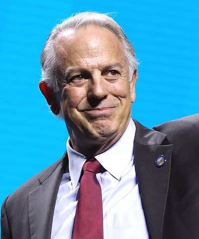

| 2026 주지사 경합주 — Cook · Sabato | |||
| Cook 기준 2026-07-10 · Sabato 기준 2026-07-23 · 등급은 확률이 아님 | |||
| 주 | Cook | Sabato | 기관 분기 |
|---|---|---|---|
| 애리조나 (AZ) | Lean D | Lean D | |
| 조지아 (GA) | Toss-up | Toss-up | |
| 아이오와 (IA) | Toss-up | Toss-up | |
| 캔자스 (KS) | Lean R | Lean R | |
| 미시간 (MI) | Lean D | Lean D | |
| 네바다 (NV) | Toss-up | Lean R | ◆ 갈림 |
| 오하이오 (OH) | Toss-up | Lean R | ◆ 갈림 |
| 위스콘신 (WI) | Toss-up | Toss-up | |
| 총 36개 주지사 선거 중 두 기관 어느 한 쪽이라도 Toss-up/Lean으로 본 주만 표시. '◆ 갈림'은 두 기관 평가가 다른 곳 — 판세 해석이 갈리는 지점입니다. 출처: 270towin 재게시분 자동 취득(scripts/fetch_governor_ratings.py). | |||
주지사 선거
2026 — 36개 주에서 열리는, 의회보다 덜 보이지만 더 직접적인 선거
2026년에는 36개 주에서 주지사 선거가 열립니다. 상·하원만큼 조명받지 않지만, 한국 독자에게는 오히려 더 직접적인 선거입니다 — 배터리·반도체 공장의 인허가와 인센티브, 주 단위 통상·노동 정책, 그리고 2030년 선거구를 그릴 권한이 주지사와 주의회에 걸려 있기 때문입니다.
왜 지금 주지사인가 — 이번 사이클은 절반 이상이 공석(open seat)입니다. 현역의 개인 브랜드가 빠지면 그 주의 기초 지형이 그대로 드러나기 때문에, 전국 환경(현재 제너릭 밸럿 D+6대)이 의석으로 전이되는 정도가 상·하원보다 크게 나타날 수 있습니다.
전국 지도 — 어디서 선거가 열리나
Solid DLikely DLean DTilt DToss-upTilt RLean RLikely RSolid R선거 없음
각 칸 = 한 개 주(면적이 아닌 같은 크기로 그려 작은 주도 동등하게 보이게 함). 색은 270toWin Consensus 등급(기준 2026-08-06) · 칸에 마우스를 올리면 Cook·Sabato 등급이 함께 표시됩니다. 2026년 선거가 있는 주 36곳. 등급은 확률이 아닙니다.
주지사는 4년 임기가 대부분이라 36개 주가 한꺼번에 돌아옵니다. 상원(35석)과 규모는 비슷하지만 지도의 모양이 다릅니다 — 상원은 개선 대상이 흩어져 있는 반면, 주지사는 대륙의 거의 전역이 칠해집니다. 회색 빈 칸은 2025년(NJ·VA)이나 2027년(LA·MS·KY) 등 다른 주기에 선거를 치르는 주입니다.
경합주 — Cook · Sabato
읽는 법: 등급(Toss-up/Lean)은 확률이 아니라 전문가의 서수적 판단입니다.
◆ 갈림은 두 기관이 다르게 본 주 — 상원의 오하이오·알래스카처럼, 평가가 갈리는 곳이 곧 판세의 실제 불확실성이 모여 있는 지점입니다.
등급 변동 이력 (바뀐 시점만 기록)
-
2026-08-10 —
Inside Elections IA: Toss-up → Tilt D·Inside Elections KS: Toss-up → Tilt R·Inside Elections MI: None → Tilt D·Inside Elections NV: None → Tilt R·Inside Elections TX: Solid R → Likely R·Race to the WH FL: None → Lean R·Race to the WH KS: None → Tilt R·Race to the WH NE: Likely R → Solid R·Race to the WH NV: None → Lean R·Race to the WH NY: Solid D → Likely D·Race to the WH OK: Likely R → Solid R·Race to the WH OR: Toss-up → Tilt D·Race to the WH SD: Lean R → Likely R·Race to the WH TX: Likely R → Lean R·Race to the WH WI: Toss-up → Tilt R·Kalshi (예측시장 가격) AK: Toss-up → Tilt R·Kalshi (예측시장 가격) GA: None → Tilt D·Kalshi (예측시장 가격) IA: None → Lean D·Kalshi (예측시장 가격) KS: Lean R → Likely R·Kalshi (예측시장 가격) NV: None → Tilt D·Kalshi (예측시장 가격) VT: Likely R → Solid R·Kalshi (예측시장 가격) WI: Toss-up → Tilt R·270toWin Consensus TX: Solid R → Likely R
기관별 비교
| 주지사 경합 8주 — 기관별 등급 | |||||||||
| 같은 주를 기관마다 어떻게 보는지 (등급은 확률이 아님) | |||||||||
| 예측기관 | 기준일 | 애리조나 | 조지아 | 아이오와 | 캔자스 | 미시간 | 네바다 | 오하이오 | 위스콘신 |
|---|---|---|---|---|---|---|---|---|---|
| Cook Political Report | 2026-07-10 | Lean D | Toss-up | Toss-up | Lean R | Lean D | Toss-up | Toss-up | Toss-up |
| Sabato's Crystal Ball | 2026-07-23 | Lean D | Toss-up | Toss-up | Lean R | Lean D | Lean R | Lean R | Toss-up |
| Inside Elections | 2026-08-06 | Toss-up | Toss-up | Tilt D | Tilt R | Tilt D | Tilt R | Lean R | Toss-up |
| Almanac of American Politics | 2026-07-13 | Lean D | Toss-up | Toss-up | Lean R | Lean D | Lean R | Toss-up | Toss-up |
| Fox News Power Rankings | 2026-07-23 | Lean D | Toss-up | Lean D | Lean R | Lean D | Toss-up | Toss-up | Toss-up |
| Race to the WH | 2026-08-10 | Lean D | Toss-up | Lean D | Tilt R | Lean D | Lean R | Toss-up | Tilt R |
| Kalshi (예측시장 가격) ※ | 2026-08-10 | 민주 85¢ | 민주 57¢ | 민주 65¢ | 민주 20¢ | 민주 84¢ | 민주 56¢ | 민주 50¢ | 민주 38¢ |
| 270toWin Consensus | 2026-08-06 | Lean D | Toss-up | Toss-up | Lean R | Lean D | Toss-up | Toss-up | Toss-up |
| ※ Kalshi 행만 성격이 다릅니다 — 등급이 아니라 **예측시장 가격**(민주 승리 계약의 마지막 체결가)이며 공개 API에서 원가격을 직접 받아 싣습니다. 등급과 같은 잣대로 비교하지 마세요. 'Tilt'는 Lean보다 좁은 등급으로 Inside Elections·RaceToTheWH가 씁니다. '—'는 경합으로 분류하지 않았거나 해당 시장이 없는 칸(추정으로 채우지 않음). | |||||||||
여덟 기관을 한 표에 놓으면 세 가지가 보입니다. 첫째, 조지아·위스콘신은 거의 모든 기관이 토스업으로 봅니다 — 이견 없는 진짜 접전. 둘째, 오하이오·네바다는 기관마다 갈립니다(Cook 토스업 vs Sabato Lean R). 셋째, 표에 Tilt라는 등급이 보이는데 이는 Lean보다 한 칸 좁은(더 접전인) 판정으로, Inside Elections와 RaceToTheWH가 씁니다 — Cook·Sabato는 쓰지 않는 눈금이라 같은 주가 기관에 따라 Toss-up과 Tilt R로 달리 적히는 일이 생깁니다. 단일 기관만 인용하면 이 불확실성이 지워지므로, 이 사이트는 항상 복수 기관을 병기합니다.
예측시장 — Kalshi 원가격
맨 아래 Kalshi 행은 등급이 아니라 가격입니다. 270towin은 이 가격을 Cook과 같은 7단계로 환산해 재게시하는데, 그러면 91센트가 “Solid D”로 보여 전문가 등급과 구분되지 않습니다. 그래서 이 사이트는 Kalshi 공개 API에서 원가격을 직접 받아 따로 싣습니다.
| 예측시장 Kalshi — 주지사 원가격 | ||||
| 기준 2026-08-10T13:54:03Z · 가격(센트)은 확률의 근사일 뿐 확률이 아님 | ||||
| 주 | 대진 | 민주 가격 | 공화 가격 | 누적 거래액 |
|---|---|---|---|---|
| 아이오와 (IA) | Rob Sand vs Zach Lahn | 65¢ | 36¢ | $333,714 |
| 조지아 (GA) | Keisha Lance Bottoms vs Rick Jackson | 57¢ | 44¢ | $499,369 |
| 네바다 (NV) | Aaron Ford vs Joe Lombardo | 56¢ | 45¢ | $269,664 |
| 오하이오 (OH) | Amy Acton vs Vivek Ramaswamy | 50¢ | 50¢ | $947,099 |
| 알래스카 (AK) | — | 40¢ | 55¢ | $ 69,110 |
| 위스콘신 (WI) | — | 38¢ | 62¢ | $389,621 |
| 플로리다 (FL) | — | 20¢ | 82¢ | $200,096 |
| 캔자스 (KS) | Cindy Holscher vs Ty Masterson | 20¢ | 80¢ | $ 22,136 |
| 각 칸은 '해당 정당이 이긴다'는 계약의 마지막 체결가입니다. 민주·공화 값은 서로 다른 계약이라 합이 100¢가 아닐 수 있으며(호가 스프레드), 정규화하지 않고 원값을 싣습니다. 거래액이 작은 시장의 가격은 소수 거래에 흔들리므로 함께 표시했습니다. Cook·Sabato 등급과 같은 잣대로 비교하지 마세요. 취득: scripts/fetch_kalshi_prices.py | ||||
읽는 법은 등급과 완전히 다릅니다. 가격은 “지금 이 결과에 돈을 걸 때의 값”이라 확률의 근사이긴 하지만 확률 자체는 아닙니다 — 수수료·유동성·거래자 구성 편향이 섞여 있고, 거래액이 작은 시장일수록 소수의 거래에 크게 흔들립니다(표에 거래액을 함께 실은 이유입니다).
그럼에도 등급과 나란히 놓으면 유용한 정보가 나옵니다. 아이오와는 Cook·Sabato가 여전히 토스업으로 보는데 시장은 민주 65센트로 한쪽으로 기울어 있고(Inside Elections도 8/6 Tilt D로 내렸습니다), 반대로 오하이오는 민주 50센트로 시장에서도 사실상 완전한 동전 던지기입니다. 위스콘신은 Cook·Sabato 모두 토스업이지만 시장은 공화 쪽(민주 38센트)을 봅니다 — 등급이 같다고 판세가 같은 것은 아니라는 뜻입니다.
아이오와에서 상원과 주지사가 반대로 기울어 있다 — 같은 주, 같은 날 치러지는데 예측시장은 상원 민주 41센트 · 주지사 민주 65센트로 24포인트를 벌려 놓았습니다(Kalshi 8/10). 주 단위 기초 지형으로는 설명되지 않는 격차이고, 남는 설명은 후보 효과입니다 — 주지사 민주 후보 Rob Sand는 현재 아이오와에서 주 전체 선출직을 가진 유일한 민주당원(감사원장)입니다. 전국 환경이 같아도 후보에 따라 결과가 갈린다는 것을 한 주 안에서 보여주는 사례라, 상원 아이오와 State Focus와 함께 보시면 좋습니다.
경선 캘린더
본선 여론조사가 의미를 갖는 시점은 양당 대진이 확정된 이후입니다. 주지사 경선은 상원과 일정이 다르므로 따로 봅니다.
| 주지사 경선 캘린더 — 경합 8주 | ||||
| 기준 2026-08-06 · 본선 대진이 언제 확정됐는지 | ||||
| 주 | 경선 | 일자 | 상태 | 내용 |
|---|---|---|---|---|
| 오하이오 (OH) | 양당 경선 | 2026-05-05 | 완료 | Amy Acton(D) 무경쟁 · Vivek Ramaswamy(R) 사실상 무경쟁 — 양당 모두 일찌감치 대진 확정. DeWine 임기 제한으로 열린 공석. |
| 조지아 (GA) | 양당 경선 | 2026-05-19 | 완료 | Keisha Lance Bottoms(D, 전 애틀랜타 시장) 지명. 공화는 과반 미달로 6/16 결선행. Kemp 임기 제한 공석. |
| 아이오와 (IA) | 양당 경선 | 2026-06-02 | 완료 | Rob Sand(D, 주 감사원장) vs Zach Lahn(R). Reynolds 불출마로 열린 공석 — 시장은 민주 64¢로 이 사이클 최대 민주 픽업 기회로 본다. |
| 네바다 (NV) | 양당 경선 | 2026-06-09 | 완료 | Aaron Ford(D, 주 법무장관) vs 현직 Joe Lombardo(R). 8개 경합주 중 공화 현직이 방어하는 두 곳 중 하나. |
| 조지아 (GA) | 공화당 결선 | 2026-06-16 | 완료 | Rick Jackson(억만장자·자기자금, 트럼프 미보증)이 Burt Jones(트럼프·Kemp 지지)를 52.8–47.3으로 제압. 조지아 역사상 최고가 비방전(약 1.6억 달러) — "트럼프 보증이 더는 무적이 아니다"는 해석을 낳았다. |
| 애리조나 (AZ) | 양당 경선 | 2026-07-21 | 완료 | 현직 Katie Hobbs(D)가 재선 도전, 공화는 Andy Biggs(연방하원). 민주 현직 방어 3곳 중 시장 평가가 가장 안정적(민주 81¢). |
| 캔자스 (KS) | 양당 경선 | 2026-08-04 | 완료 | Cindy Holscher(D) vs Ty Masterson(R, 주 상원의장). Kelly 임기 제한 공석 — 구조적 공화 우위 주라 민주 수성이 어렵다(시장 민주 23¢). |
| 미시간 (MI) | 양당 경선 | 2026-08-04 | 완료 | Jocelyn Benson(D, 주 국무장관)이 Chris Swanson(제네시 카운티 보안관)을 꺾고 지명, 공화는 트럼프가 지지한 John James(연방하원). 같은 날 상원 경선(El-Sayed 확정)도 함께 치러졌다. |
| 위스콘신 (WI) | 양당 경선 | 2026-08-11 | 예정 | 8개 경합주 중 **유일하게 남은 미확정 대진**. Evers 불출마 공석이며, 주지사·주 상원·주 하원이 동시에 경합권이라 트라이펙타가 통째로 걸린 주다. |
| 일자는 270toWin 2026 주별 경선 캘린더(https://www.270towin.com/2026-state-primary-calendar/) 기준. 후보 확정 사실은 MI·OH를 보도로 교차 확인했고, 나머지 주의 후보명은 Kalshi 계약 라벨 기준이라 공식 인증 결과와 대조하지 않았다(이름 표기 오류 가능). 경합 8주만 수록한다. | ||||
8/4 미시간·캔자스를 끝으로 경합 8주 중 7곳의 대진이 확정됐습니다. 남은 것은 8/11 위스콘신 하나입니다 — 공교롭게 주지사·주 상원·주 하원이 동시에 경합권인 주라, 이번 사이클에서 구조 변화 폭이 가장 큰 곳의 대진이 마지막에 정해집니다.
시간 배치를 보면 오하이오가 5/5로 가장 빨랐고(양당 모두 무경쟁에 가까웠던 덕분) 그만큼 본선 조사 축적이 두껍습니다. 반대로 조지아는 5/19 1차에서 공화가 과반에 미달해 6/16 결선까지 가면서 대진 확정이 한 달 늦어졌고, 그 결선이 이번 사이클에서 가장 주목받은 경선이 됐습니다(아래 참조).
주목 레이스
조지아 — 트럼프 보증이 처음 꺾인 곳 Kemp 주지사의 임기 제한으로 열린 공석. 6/16 공화 결선에서 Rick Jackson(억만장자·자기자금 1억 달러+, 트럼프 미보증)이 Burt Jones(트럼프·Kemp 지지)를 52.8–47.3으로 제압했습니다. 조지아 역사상 최고가 비방전(약 1.6억 달러) 끝의 결과로, “트럼프 보증은 여전히 강하지만 더는 무적이 아니다”라는 해석을 낳았습니다. 같은 주에서 상원(오소프)도 동시에 치러져 한 주에서 상원·주지사가 함께 걸린 최대 격전지입니다.
위스콘신 — 재획정이 만든 3중 접전 주지사가 토스업인 동시에, 재획정 신지도로 주 상·하원이 모두 경합권에 들어왔습니다. 세 선거가 같은 방향으로 움직이면 트라이펙타(주지사+양원 독점)가 통째로 바뀔 수 있는, 이번 사이클에서 구조 변화 폭이 가장 큰 주입니다.
미시간 · 애리조나 — 민주 방어(Lean D) 두 곳 모두 민주 주지사 자리를 지키는 싸움이며, 동시에 주의회 다수도 걸려 있습니다. 미시간은 같은 날(8/4) 주지사·상원 경선이 함께 치러져 한 주에서 세 층위가 동시에 움직입니다 — 주지사는 Benson(D) vs James(R), 상원은 El-Sayed(D) vs Rogers(R)로 확정됐습니다.
오하이오 · 네바다 — 기관이 갈리는 두 곳 Cook은 토스업, Sabato는 Lean R. 오하이오는 상원(브라운 vs 허스티드)도 진성 토스업이라, 주 전체가 상·하위 선거 모두에서 접전인 드문 사례입니다.
한국 함의 — 공장이 있는 주가 곧 경합주 경합 8주 중 미시간(LG에너지솔루션·Tesla-LG LFP 공장)·조지아(SK온·현대차 메타플랜트)·오하이오(한화 등 제조 투자)·애리조나(반도체 클러스터)가 한국 기업의 대미 투자처와 겹칩니다. 주지사는 인허가·세제 인센티브·전력 요금 같은 투자 환경의 실질 결정권자이므로, 연방 통상정책보다 개별 프로젝트에 더 빨리 영향을 줍니다. 다만 후보들의 한국 관련 직접 발언·공약은 아직 확인되지 않았습니다 — 확인되는 대로 Korea Watch에 기록합니다.
후보 프로필 — 경합 8주
상원 State Focus와 같은 양식의 후보 카드입니다. 주지사 후보는 연방 표결 기록이 없는 경우가 많아(주 단위 선출직·민간 출신), 상원 카드보다 경력·자금·포지셔닝의 비중이 큽니다. 등급 순서는 위 경합주 표를 함께 보세요.
사진 출처 — 모든 초상은 Wikimedia Commons의 퍼블릭 도메인·CC 라이선스 이미지이며, 각 카드 하단에 작가·라이선스를 병기했습니다. 자유 라이선스 초상을 확보하지 못한 Masterson(KS·공화)·Lahn(IA·공화) 두 명은 플레이스홀더로 둡니다 — 캠페인 사이트 사진은 저작권이 확인되기 전까지 쓰지 않습니다.
애리조나 AZ

케이티 홉스 Katie Hobbs민주 · 현직
1969년생(57세) · 애리조나 주지사(2023~) · 전 주 국무장관·사회복지사
가족 남편 Pat, 자녀 둘
학력 노던애리조나대 사회복지 학사, 애리조나주립대(ASU) 사회복지 석사
경력 2022 주지사 50.3% vs Lake 49.6%(0.7%p) · 2018 주 국무장관 50.4% · 주상원 3선
펀드레이징 Q2 모금 $2.6M · 잔고 $2.4M(선제 광고로 지출 $7.4M) + DGA $10M 투입(주 선관위 신고·KJZZ)
강점
- 현직 프리미엄 · 2022 최격전지 승리 경험
- 공화 주의회 상대 거부권 정치로 온건 이미지
- 상대(빅스)의 강경 포지셔닝 반사이익
약점
- 2022년 0.7%p 신승 — 기반 취약
- 낮은 카리스마·토론 회피 논란(2022)
- 트럼프가 2024년 5.5%p 이긴 주
정책 낙태권 보호 · 주택·생활비 · 물(콜로라도강) 문제 · 보육·교육
🇰🇷 한국 함의 한국 관련 직접 입장은 공개 출처에서 확인되지 않음
사진: Gage Skidmore · CC BY-SA 2.0 (Wikimedia Commons: Katie_Hobbs_in_2025.jpg) 출처 [1]
앤디 빅스 Andy Biggs공화
1958년생(68세) · 연방하원의원 AZ-05 5선(2017~) · 전 주상원의장 · 변호사
가족 부인 Cindy, 자녀 여섯(딸 1명 2025년 별세)
학력 BYU 학사, 애리조나대 JD, ASU 석사
경력 하원 5연승(56.7~64.1%) · 2026-07-21 경선 73.6% 압승(롭슨 경선 전 사퇴)
펀드레이징 모금 $0.9M · 잔고 $1.2M (주 선관위 신고, 7/16 — 홉스 대비 열세)
강점
- 프리덤코커스 전 의장급 인지도·강성 보수 결집
- 의정 경력 20년+
- MAGA 조직 장악
약점
- 2021-01-06 선거인단 인증 반대 표결 — 본선 부담
- 경합주 중도층에 불리한 강경 노선
- 주 전체 선거 첫 도전
정책 국경 통제 · 연방지출 삭감·감세 · 규제 완화 · 선거 보안
🇰🇷 한국 함의 한국 관련 직접 입장은 공개 출처에서 확인되지 않음
조지아 GA

케이샤 랜스 바텀스 Keisha Lance Bottoms민주
1970년생(56세) · 전 애틀랜타 시장(2018–2022) · 전 백악관 수석고문(공공참여) · 변호사
가족 남편 Derek Bottoms, 입양 자녀 넷
학력 플로리다 A&M대 방송저널리즘 학사, 조지아주립대 JD
경력 2017 애틀랜타 시장 결선 50.45%(832표차) · 2021 재선 불출마 · 2026-05-19 민주 경선 56%로 결선 없이 확정
펀드레이징 전국 소액기부 네트워크 — 본선 신고 초기 단계(주 선관위)
강점
- 전국 인지도(2020 부통령 후보군·백악관 경력)
- 흑인 여성 유권자 기반 — 당선 시 조지아 최초
- 애틀랜타 대도시권 조직
약점
- 시장 재선 포기 전력(‘중도하차’ 공격 소재)
- 재임기 범죄 급증·2020 소요 대응 논란
- 애틀랜타 밖 주 전역 득표력 미검증
정책 경제·일자리 훈련 · 메디케이드 확대 · 공교육 · 치안+경찰개혁 병행
🇰🇷 한국 함의 한국 관련 직접 입장은 공개 출처에서 확인되지 않음
사진: Office of U.S. Senator David Perdue · Public domain (Wikimedia Commons: Keisha_Lance_Bottoms_2019.jpg) 출처 [1]
릭 잭슨 Rick Jackson공화
1954년생(72세) · Jackson Healthcare(의료인력, 연매출 ~$30억) 창업자·CEO — 첫 공직 출마
가족 아들 Shane(회사 사장) · 배우자 미확인
학력 대학 중퇴(학비 부족) — 자수성가 서사
경력 첫 출마 · 2026-05-19 1차 33%(2위) → 6/16 결선 ~53%로 트럼프 지지 Burt Jones 격파
펀드레이징 자기자금 $50M+ 투입(경선+결선 공화 총비용 $138.6M 중 ~$108M) — 사실상 무제한
강점
- 무제한 자기자금
- 빈곤·위탁가정 출신 자수성가 스토리
- 아웃사이더 — 트럼프 후보를 꺾고도 친트럼프 포지셔닝
약점
- 공직·행정 경험 전무
- 70대 초선 도전
- 정당 조직 기반 부재·본선 검증 안 됨
정책 주 소득세 반감 · 재산세 동결 · 이민 단속 · 위탁아동·아동복지
🇰🇷 한국 함의 한국 관련 직접 입장은 공개 출처에서 확인되지 않음
오하이오 OH
에이미 액턴 Amy Acton민주
1966년생(60세) · 의사(공중보건) · 전 오하이오 보건국장(2019–2020) — 코로나 초기 대응 주도
가족 남편 Eric Acton(교사), 혼합가족 자녀 여섯 · 유년기 빈곤·홈리스 경험
학력 영스타운주립대 학사, 노스이스트오하이오 의대 MD, 오하이오주립대 MPH
경력 선출직 첫 출마 · 2026-05-05 민주 경선 무경쟁 통과
펀드레이징 총모금 ~$18.5M — 단 5/15~6/30 광고 집행 ~$10만(램스와미 ~$9M의 1/90)
강점
- 팬데믹기 ‘신뢰받는 얼굴’ — 초당적 인지도
- Profile in Courage 수상(2021) 서사
- 브라운 상원 티켓과의 시너지
약점
- 선출직·행정 경험 부족
- 락다운 반발층(보수)의 표적
- 오하이오의 공화 우위 지형(트럼프 +11)
정책 의료비 인하 · 메디케이드 확대 · 공중보건 · 돌봄 세액공제
🇰🇷 한국 함의 한국 관련 직접 입장은 공개 출처에서 확인되지 않음
사진: air force · Public domain (Wikimedia Commons: Amy_Acton_(cropped).jpg) 출처 [1]
비벡 램스와미 Vivek Ramaswamy공화
1985년생(41세) · 기업인·작가 — Roivant Sciences 창업, Strive Asset Management 공동창업 · 2024 대선 경선 주자
가족 부인 Apoorva(외과 교수), 아들 둘
학력 하버드 생물학 학사(수석급), 예일 로스쿨 JD
경력 2024 대선 경선 → 아이오와 직후 사퇴·트럼프 지지 · 2026-05-05 공화 경선 82% 압승
펀드레이징 총모금 ~$50M(절반 자비 · 머스크 $5M·야스 $10M 등) — 5/15~6/30 광고 ~$9M
강점
- 막대한 자산+모금력 · 트럼프 조기 지지 확보
- 전국 인지도·미디어 장악력
- 젊음(41) — 2028 발판론이 동원력으로
약점
- 공직 경험 전무
- DOGE 공동수장 하루 만에 이탈(2025-01) 등 ‘뜨내기’ 공격 소재
- 지방선거 투표 불참 이력
정책 교육 개혁(성취 기준·학교선택) · 감세·규제 완화 · 반ESG·반워크 · 치안
🇰🇷 한국 함의 한국 관련 직접 입장은 공개 출처에서 확인되지 않음
사진: Prime Minister’s Office · GODL-India (Wikimedia Commons: Vivek_Ramaswamy,_Prime_Minister_Narendra_Modi,_2025_(cropped).jpg) 출처 [1]
미시간 MI

조슬린 벤슨 Jocelyn Benson민주
1977년생(49세) · 미시간 주 국무장관(2019~) · 전 웨인주립대 로스쿨 학장
가족 남편 Ryan Friedrichs(육군 참전용사), 아들 하나
학력 웰즐리칼리지 학사, 옥스퍼드 사회학 석사(마셜 장학생), 하버드 로스쿨 JD
경력 2018 국무장관 52.9% · 2022 재선 55.9%(민주 최상위 득표) · 2026-08-04 경선 85% 대 15% 압승(스완슨)
펀드레이징 모금 $4.9M · 잔고 $6.4M (경선 전 주 선관위 신고)
강점
- 주 전체 선거 3회 검증 — 2022 두 자릿수 압승
- 2020 선거 방어 ‘민주주의 수호’ 브랜드(JFK Profile in Courage)
- UAW 등 노조 지지
약점
- 보수층 집중 표적 — 양극화 리스크
- 경제·생활비 행정 실적 부재
- 휘트머 은퇴 후 개방석 방어 부담
정책 투표권·민주주의 · 생활비·주거 · 교육 · 관공서 서비스 개혁
🇰🇷 한국 함의 한국 관련 직접 입장은 공개 출처에서 확인되지 않음
존 제임스 John James공화
1981년생(45세) · 연방하원의원 MI-10(2023~) · 전 육군 아파치 조종사(이라크전) · 가족기업 경영
가족 부인 Elizabeth, 아들 셋
학력 웨스트포인트(육사) 학사, 펜실베이니아주립대 석사, 미시간대 MBA
경력 2018 상원 낙선(45.8%) · 2020 상원 낙선(1.7%p차) · 2022 하원 0.5%p 신승 → 2024 51.1% 재선 · 2026-08-04 경선 ~15%p 승(존슨 자비 $32M 상대)
펀드레이징 미확인 (경선 후 신고 대기)
강점
- 트럼프 지지
- 군인+기업인 이력·전국구 모금력
- 흑인 공화당원 교차 소구 잠재력
약점
- 주 전체 선거 2연패(2018·2020)
- 경합구에서도 신승에 그친 득표력
- 낙태 강경 입장 — 2022 낙태권 주민투표 가결 주
정책 제조업·경제 · 교육(학부모 권한) · 국경 · 치안
🇰🇷 한국 함의 한국 관련 직접 입장은 공개 출처에서 확인되지 않음
위스콘신 WI
※ 아직 지명 확정 전(8/11 경선) — 프란체스카 홍(민주·경선 선두) · 톰 티파니(공화·사실상 확정)

프란체스카 홍 Francesca Hong민주
1988년생(38세) · 위스콘신 주하원의원(매디슨, 2021~) · 셰프 — Morris Ramen 공동창업
가족 아들 하나 (이혼)
학력 위스콘신대 매디슨 중퇴(생계로 요식업 진입)
경력 2020 주하원 88% — 위스콘신 최초 아시아계 주의원 · 2022·2024 사실상 무경쟁 재선 · 경선 조사 선두: Marquette 7월 38% 대 반스 16%
펀드레이징 주하원 4년 누적 ~$24만 — 반기업 PAC 선언, 소액기부 의존 (경선 진행 중)
강점
- 진보 풀뿌리·청년층 에너지(맘다니 모델)
- 요식업 노동자 출신 생활비 서사
- 최초성(아시아계·여성)
약점
- 주 전체 선거 경험·조직 부재
- DSA 당원 — ‘사회주의자’ 공격 정면 노출
- 모금력 열세
정책 공교육 · 보육 · 의료 접근 · 기후·노동권
🇰🇷 한국 함의 한국계 미국인 — 한국 이민자 부모, 매디슨 출생. 2025년 주의회 최초 아시아계 코커스 설립. 경합주 후보 중 유일한 실질적 한국 연결
사진: SecretName101 · CC BY 4.0 (Wikimedia Commons: Francesca_Hong_IMG_2500_(1).jpg) 출처 [1]
톰 티파니 Tom Tiffany공화
1957년생(69세) · 연방하원의원 WI-07(2020 보선~) · 전 주상원·주하원 · 유람선 사업 출신
가족 부인 Chris, 딸 셋
학력 위스콘신대 리버폴스 농업경제학 학사
경력 2020 보선 57.1% 이후 60%+ 연승(2024 63.6%) · 경선 조사 67%(사실상 단독 — 베리엔 2025 사퇴)
펀드레이징 미확인 (경선 후 신고 대기)
강점
- 트럼프 지지 + 주 공화 하원의원 전원 지지
- 북부 농촌 기반 견고
- 의정 경력 15년
약점
- 주 전체 선거 미검증 — 밀워키·매디슨 교외 인지도 낮음
- 2020 대선 인증 반대 표결
- 고령(68)·농촌 보수 브랜드의 확장성 한계
정책 감세 · 자원개발·규제완화(벌목·광업) · 국경 · 선거 무결성
🇰🇷 한국 함의 한국 관련 직접 입장은 공개 출처에서 확인되지 않음
사진: US House of Representatives · Public domain (Wikimedia Commons: Tom_Tiffany.jpg) 출처 [1]
네바다 NV
애런 포드 Aaron Ford민주
1972년생(54세) · 네바다 주 법무장관(2019~) · 전 주상원 다수당 대표
가족 부인 Berna Rhodes-Ford(변호사), 아들 셋+조카 양육
학력 텍사스 A&M 학사, 조지워싱턴대 석사, 오하이오주립대 석·박사·JD
경력 2018 법무장관 0.4%p 신승 · 2022 재선 52.3% · 2026-06-09 경선 63.8%
펀드레이징 미확인 (주 선관위 신고 확인 필요)
강점
- 주 전체 선거 2회 검증
- 오피오이드 합의 $11억 등 법무장관 실적
- 당선 시 네바다 최초 흑인 주지사
약점
- 과거 IRS 체납 이력(2016년 해소)
- 후원 해외여행 윤리위 심사 진행 중
- 현직 롬바도의 온건 이미지
정책 주택 비용 · 약가·의료비 · 공교육 · 소비자 보호
🇰🇷 한국 함의 한국 관련 직접 입장은 공개 출처에서 확인되지 않음
사진: United State Senate - the Office of Michael Bennet · Public domain (Wikimedia Commons: Aaron_D._Ford.jpg) 출처 [1]

조 롬바도 Joe Lombardo공화 · 현직
1962년생(64세) · 네바다 주지사(2023~) · 전 클라크카운티 셰리프 · 라스베이거스 경찰 26년
가족 부인 Donna
학력 UNLV 토목공학 학사, UNLV 위기관리 석사
경력 2014 셰리프 51% · 2018 재선 72.8% · 2022 주지사 48.8% vs 시솔랙 47.3% — 그 해 전국 유일 현직 축출 · 2026-06-09 경선 91.1%
펀드레이징 미확인 (주 선관위 신고 확인 필요)
강점
- 현직+법집행 이미지
- 2022 역풍 속 민주 현직을 꺾은 득표력
- 트럼프 지지와 온건 실용 병행
약점
- 거부권 75건(2023, 주 기록) — 민주 주의회와 전면 대치
- 1.5%p 신승 전력·민주 조직력(리드 머신)
- 중간선거 여당 역풍 노출
정책 선거제 개혁(투표자 ID) · 학교선택 확대 · 치안·경찰 지원 · 증세 반대
🇰🇷 한국 함의 한국 관련 직접 입장은 공개 출처에서 확인되지 않음
사진: Gage Skidmore · CC BY-SA 3.0 (Wikimedia Commons: Joe_Lombardo_by_Gage_Skidmore.jpg) 출처 [1]
아이오와 IA
롭 샌드 Rob Sand민주
1982년생(44세) · 아이오와 주 감사원장(2019~) — 주 유일 민주 주 전체 선출직 · 전 부패·금융범죄 검사
가족 부인 Christine Lauridsen(Lauridsen Group CEO), 아들 둘
학력 브라운대 정치학 학사(트루먼 장학생), 아이오와대 JD
경력 2018 감사원장 51.0%(공화 현직 격파) · 2022 재선 50.1%(0.2%p) · 2026 경선 무경쟁
펀드레이징 2025년 한 해 $9.5M(주 기록) · 현금 $13.2M — 주지사 후보 전국 최상위급(Cook 4/9 상향 사유)
강점
- 기록적 모금
- ‘3당파(tri-partisan)’ 초당 브랜드·부패 감시 이력
- 아이오와 민주 중 유일한 주 전체 승리 경험
약점
- 처가(Lauridsen家) 자금 의존 공격 소재
- 2022년 0.2%p 신승
- 트럼프 +13 주의 우경화 지형
정책 정부 효율·투명성 · 메디케이드 민영화 감사·의료 · 공교육 · 초당 협치
🇰🇷 한국 함의 한국 관련 직접 입장은 공개 출처에서 확인되지 않음

잭 란 Zach Lahn공화
농장주·사업가 — 위치토 사립학교 ‘Wonder’ 공동창업(체이스 코크와), 전 AFP 몬태나 지부장
가족 부인 Annie, 혼합가족 자녀 일곱
학력 미확인 (콜로라도 주상원 보좌 경력 확인)
경력 첫 공직 출마 · 2026-06-02 경선 37.8% 대 핀스트라(현역 하원) 37.0% — 트럼프 막판 지지 후보를 꺾은 이변
펀드레이징 자기자금 $2M 대출 포함 — 경선에서 핀스트라 모금 추월
강점
- 아웃사이더·반기득권 포지셔닝
- 자기자금+MAHA(RFK Jr. 계열) 지지
- 경선 이변의 모멘텀
약점
- 공직 경험 전무
- 거주 논란 — 2023년 아이오와 이주·캔자스 투표 이력
- 코크 네트워크 유착 공격 소재
정책 가족농 보호·Big Ag 반독점 · 교육(학부모 권한) · 낙태 반대 · Make Iowa Healthy Again
🇰🇷 한국 함의 한국 관련 직접 입장은 공개 출처에서 확인되지 않음
캔자스 KS

신디 홀셔 Cindy Holscher민주
1969년생(57세) · 캔자스 주상원의원(오버랜드파크, 2021~) · 전 주하원 · 기업 마케팅 출신
가족 남편 Greg, 자녀 셋
학력 미주리대 학사(저널리즘·마케팅·정치학) — 집안 첫 대졸
경력 2016 주하원 55.7%(공화 현직 격파) · 2020 주상원 54.4% · 2024 재선 61.1% · 2026-08-04 경선 49%(켈리 주지사 지지 코슨 39% 격파)
펀드레이징 미확인 (경선 직후)
강점
- 공화 성향 교외 지역구 연승 — 캔자스 민주 승리 공식의 핵심 지역
- 노동자 가정 서사
- 브라운백 감세 실패 프레임 활용 가능
약점
- 주 전체 인지도·모금력 열세
- 켈리식 온건 브랜드 계승 미검증
- 연방선거 기준 공화 우위 주
정책 공교육 완전 재정 · 식품 판매세·사회보장 과세 폐지 · 메디케이드 확대 · 보육 세액공제
🇰🇷 한국 함의 한국 관련 직접 입장은 공개 출처에서 확인되지 않음
타이 매스터슨 Ty Masterson공화
1969년생(57세) · 캔자스 주상원의장(2021~) · 주상원 5선 · 부동산·소기업 경영
가족 부인 Marlo
학력 캔자스주립대 수학 (학위 취득 여부 미확인)
경력 주상원 5선(63.5~69.0%) · 2026-08-04 경선 43%(7인 — 슈왑 국무장관 등 격파)
펀드레이징 미확인 (경선 직후 · 경선 외부자금 $20M+ 유입 레이스)
강점
- 주의회 권력 정점 — 입법 실적·당내 조직
- 강성 보수 기반 결집
- 트럼프·마셜 상원의원 지지
약점
- 2011년 개인 파산 전력
- 강경 사회 이슈 주도 — 2022 낙태권 주민투표 59% 유지 주에서 중도 이탈 위험
- 최근 3연속 민주 주지사 당선 주
정책 감세 · 학교선택(바우처) · 낙태 반대 · 불법이민 대응
🇰🇷 한국 함의 한국 관련 직접 입장은 공개 출처에서 확인되지 않음
사진 미확보 출처 [1]
주의회와 함께 보기
주지사만으로는 정책이 완성되지 않습니다. 같은 날 치러지는 주의회 선거가 트라이펙타(주지사+상·하원)를 가르고, 그 조합이 2030년 선거구 획정 권한으로 이어집니다 — 재획정 페이지의 주의회 절에서 다룹니다.
데이터 갱신 규약
- 주지사 등급: 자동 —
scripts/fetch_governor_ratings.py가 270towin 재게시분에서 8개 기관 등급을 취득 →data/governor_ratings.json. 주간 발행(publish_weekly.sh)에 포함. - 주지사 경선 캘린더: 수동 —
data/governor_primaries.json. 일자는 270toWin 경선 캘린더 기준, 후보 확정은 보도로 대조. - 예측시장 가격: 자동 —
scripts/fetch_kalshi_prices.py가 Kalshi 공개 API에서 주지사 35개·상원 35개 레이스와 상원 다수 계약의 원가격을 취득 →data/kalshi_prices.json. - 주지사 후보 프로필: 수동 —
data/governor_candidates.json(경합 8주 16명, 상원candidates.json과 동일 스키마 +office). 사진은 Wikimedia Commons의 PD·CC만 쓰고photo_credit에 작가·라이선스를 남깁니다. 자유 라이선스 초상이 없으면photo: null로 두어 플레이스홀더가 렌더되게 합니다 — 캠페인 사진을 저작권 확인 없이 쓰지 않습니다. - 주목 레이스 프로즈·한국 함의: 주간 브리핑에서 수동 보강.
- 빈 칸은 추정으로 채우지 않습니다(
—또는 【수집】). 뉴햄프셔 주지사는 Kalshi 계약의 규칙(2026 선거)과 만기(2029년)가 서로 어긋나 어느 선거를 가격화한 것인지 확정할 수 없어 가격을 싣지 않습니다.